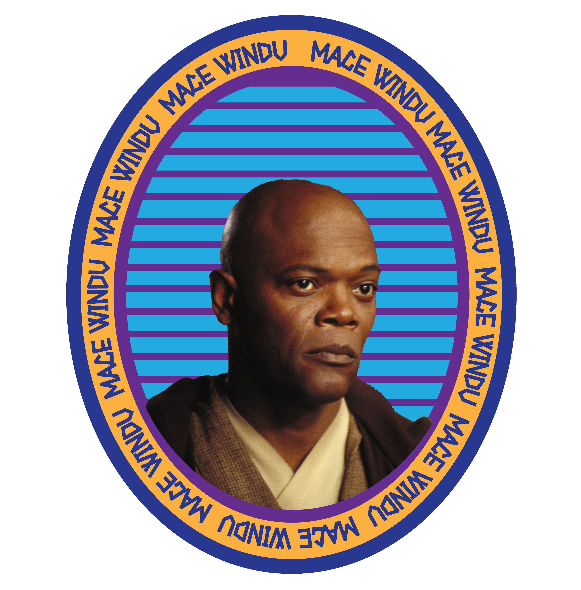
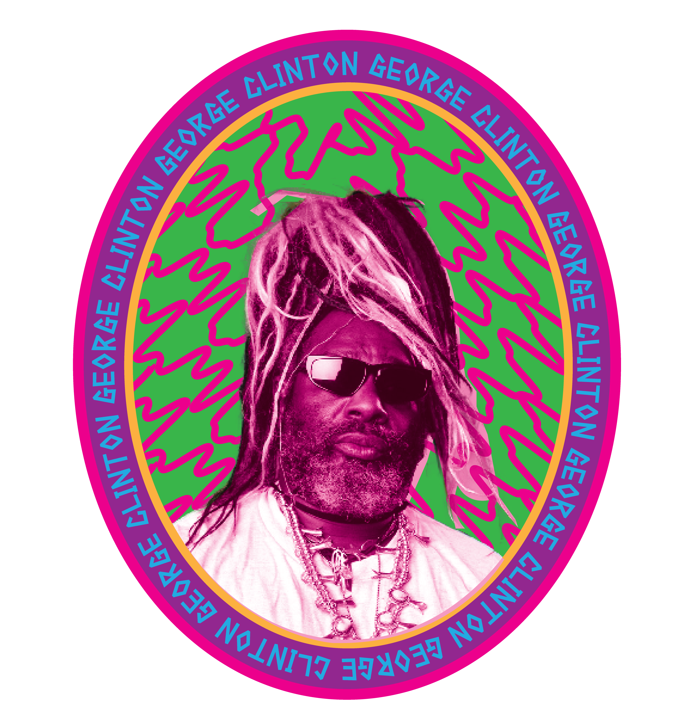
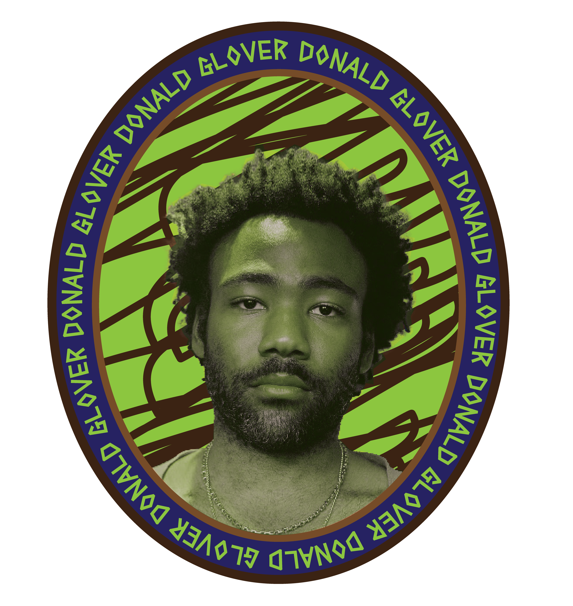

History
In a 1970s essay with the provocative title of “Why Blacks Don't Read Science Fiction,” the late African-American writer Charles R. Saunders reflected bitterly on the prevalence of anti-Blackness in the genre. Although white American science-fiction writers “were capable of stretching their imaginations to the point of conceptualizing aliens with sympathetic qualities,” he mused, “a black man or woman in a spacesuit was an image beyond the limits of [their] imaginations.... If blacks appeared at all in the pages of the science fiction pulp magazines, they were presented as offensive ‘darkie' stereotypes.” The genre, as Saunders memorably put it, was “as white as a Ku Klux Klan meeting.”
In the years since Saunders's acerbic observations, Black writers have undoubtedly become more prominent in speculative fiction. But given white men's continual dominance of the genre, nonwhite authors are all too frequently still overlooked.
The term “Afrofuturism” was introduced by scholar Mark Dery in 1993, as a way of defining existing trends that focused on Black literature and 1980s technoculture. But Afrofuturist tendencies have been a part of art, literature, and music almost since the birth of modern science fiction at the beginning of the nineteenth century. Black to the Future - questioned why so few African Americans write science fiction, a genre whose close encounters with the other, the stranger in a strange land would seem uniquely suited to the concerns of African American novelists.
Television
Black sci-fi television characters play a crucial role in shaping and contributing to Afrofuturism by presenting narratives that reimagine the future through a lens rooted in African and African-American culture, history, and experiences. These characters challenge traditional Eurocentric views of science fiction by introducing diverse perspectives, cultural nuances, and alternative visions of technology, society, and identity. Whether it’s through the exploration of advanced technology, the portrayal of Afrocentric aesthetics, or the interrogation of social issues like racism and inequality, black sci-fi characters offer audiences a glimpse into a future where blackness is central and celebrated. By embodying themes of resilience, empowerment, and cultural pride, these characters inspire audiences to envision a future where black voices, stories, and contributions are fully realized and valued. Through their presence, black sci-fi television characters affirm the importance of representation in shaping not only fictional worlds but also our collective imagination of what lies ahead.
Nyota Uhura is a highly skilled communications officer aboard the starship USS Enterprise in the Star Trek universe. Known for her linguistic prowess and calm demeanor, Uhura plays a vital role in interstellar diplomacy and communication with alien species. Throughout the series, she breaks barriers as one of the first prominent African-American female characters in a science fiction television series.
Geordi La Forge is a brilliant engineer and Starfleet officer in the Star Trek universe, known for his expertise in technology. Blind since birth, he relies on a VISOR (Visual Instrument and Sensory Organ Replacement) that grants him enhanced vision and perception. La Forge serves as the chief engineer aboard the USS Enterprise-D and later the USS Enterprise-E, embodying determination, and adaptability in the face of adversity.
Moff Gideon is a key antagonist in the Star Wars series “The Mandalorian,” not Star Trek. He is a former Imperial officer who seeks to restore the Empire’s power after its collapse. Ruthless and cunning, Gideon commands a formidable force known as the Imperial Remnant, posing a significant threat to the protagonist, Din Djarin, and his allies.
Dualla, portrayed in "Battlestar Galactica," is a resilient and dedicated officer in the Colonial Fleet. Initially serving as a communications officer, she evolves into a key figure in the fleet's leadership, displaying compassion and strength in the face of overwhelming challenges. Dualla's journey explores themes of duty, sacrifice, and personal struggle amidst the backdrop of interstellar conflict.
Martha Jones, portrayed by Freema Agyeman, stands as a beacon of representation in the realm of science fiction television. Her character defied stereotypes with every step, showcasing intelligence, strength, and resilience in abundance. As a companion to the Doctor, she navigated the complexities of time and space, challenging traditional narratives about Black characters in the genre. Martha's multifaceted portrayal not only broke barriers but also paved the way for more nuanced and diverse representations of Black women in television, leaving an indelible mark on the landscape of science fiction.

In the oppressive world of Gilead, Moira, portrayed by Samira Wiley, emerges as a symbol of resistance and empowerment. Her unwavering spirit and determination in the face of unimaginable adversity illustrate the strength of Black women in the fight against oppression. Moira's character not only contributes to the diversification of television but also sparks important conversations about race, identity, and the future. Through her portrayal, she inspires audiences to envision a world where resilience triumphs over tyranny, leaving an enduring legacy in the realm of Afrofuturism.
Movies
The presence of black sci-fi characters in film holds immense significance, serving as a catalyst for the exploration and advancement of Afrofuturism. These characters play a pivotal role in challenging conventional narratives and expanding the boundaries of speculative fiction by infusing stories with the rich tapestry of African and African-American culture, history, and experiences. By offering audiences representations of blackness in futuristic settings, these characters contribute to Afrofuturism’s mission of envisioning a future where black voices and perspectives are not only present but also central to shaping the narrative. Through their portrayal, black sci-fi characters inspire audiences to reimagine technology, society, and identity through a lens that embraces diversity and celebrates cultural heritage. Their existence not only validates the experiences of black viewers but also fosters a sense of empowerment and belonging by affirming the importance of representation in shaping our collective imagination of what lies ahead. In essence, black sci-fi characters in film serve as trailblazers in the ongoing journey of Afrofuturism, paving the way for a more inclusive and equitable future where all voices are heard and celebrated.

Mace Windu is a revered Jedi Master in the Star Wars prequel trilogy, known for his exceptional skill in lightsaber combat and unwavering commitment to the Jedi Order. As a member of the Jedi High Council, Windu plays a crucial role in guiding the Order through the turbulent times of the Clone Wars. His distinct purple lightsaber and stern demeanor reflect his uncompromising dedication to upholding justice and peace in the galaxy.
Lando Calrissian is a charismatic and suave character in the Star Wars universe, first introduced in "The Empire Strikes Back." Initially portrayed as a gambler and businessman, Lando undergoes a significant arc, ultimately becoming a key ally to the Rebel Alliance in their fight against the Empire. With his charm, resourcefulness, and knack for navigating complex situations, Lando proves to be a crucial asset in the struggle for freedom across the galaxy.
Ruby Rhod is a flamboyant and eccentric radio personality in "The Fifth Element," known for his outrageous fashion sense and rapid-fire delivery. He becomes an unexpected ally to the protagonist, Korben Dallas, aiding him in his quest to protect the mystical Fifth Element from falling into the wrong hands. With his larger-than-life personality and unexpected bravery, Ruby Rhod adds a unique blend of humor and excitement to the film's futuristic world.
T'Challa is the regal and noble king of Wakanda in the Marvel Cinematic Universe, known by his superhero alter-ego, Black Panther. As the protector of his technologically advanced nation, T'Challa wields the powers of the Black Panther suit and the wisdom passed down through generations. Throughout his journey, he grapples with the responsibilities of leadership, the legacy of his family, and his commitment to defending Wakanda and the world from threats.

Selina Kyle, portrayed by Eartha Kitt, is a complex and alluring character in the 1960s Batman television series. As the infamous Catwoman, she exudes cunning, agility, and a hint of vulnerability, making her one of Batman's most formidable adversaries and occasional allies. With her iconic purr and captivating presence, Eartha Kitt's portrayal of Selina Kyle leaves an indelible mark on the Batman mythos, embodying the feline femme fatale with unmatched allure and intrigue.
Morpheus is a pivotal character in "The Matrix" film series, serving as a mentor and leader in the fight against the oppressive machine overlords. Renowned for his belief in the prophecy of "The One," Morpheus guides Neo, the protagonist, on a journey of self-discovery and liberation from the simulated reality of the Matrix. With his unwavering faith and wisdom, Morpheus embodies the rebellion's spirit, challenging the status quo and inspiring others to awaken to the truth.

Finn, also known as FN-2187, is a central character in the Star Wars sequel trilogy. Originally a stormtrooper in the First Order, Finn defects after witnessing their atrocities and joins the Resistance. Throughout the trilogy, Finn showcases bravery, loyalty, and a growing sense of individual identity as he fights against tyranny and for the freedom of the galaxy.

Jordan Peele has had a profound impact on the realm of science fiction and Afrofuturism through his groundbreaking films that tackle themes of race, identity, and social commentary. With movies like "Get Out" and "Us," Peele redefines the genre by infusing it with elements of horror and psychological thriller while offering thought-provoking narratives rooted in the Black experience. His visionary storytelling and exploration of Afrofuturist themes have sparked important conversations about representation and power dynamics in popular culture, cementing his legacy as a transformative force in the genre.
Musicians
Afrofuturism has emerged as a powerful and transformative force within the realm of music, captivating audiences worldwide with its fusion of futuristic visions and African diasporic aesthetics. Rooted in the exploration of identity, technology, and social justice, Afrofuturist themes have permeated a diverse array of musical genres, from jazz and funk to hip-hop and electronic music. This innovative movement not only reimagines the past and present but also envisions bold, alternative futures, serving as a conduit for marginalized voices and a catalyst for cultural empowerment. In this section, we delve into the profound significance and widespread influence of Afrofuturism in shaping contemporary musical landscapes.
Bootsy Collins is a legendary funk musician and bassist known for his flamboyant style and infectious grooves. As a key member of Parliament-Funkadelic and his own band, Bootsy's Rubber Band, he helped shape the sound of funk music in the 1970s and beyond. With his signature star-shaped sunglasses and larger-than-life persona, Bootsy Collins remains an iconic figure in the world of music, revered for his innovation and funkadelic spirit.
Sun Ra was a visionary jazz composer, bandleader, and cosmic philosopher, known for his avant-garde music and Afrofuturist beliefs. Blending elements of jazz, space-age sounds, and Egyptian mysticism, Sun Ra's music transcended conventional boundaries, exploring themes of cosmic consciousness and liberation. His eccentric persona and prolific output left an indelible mark on the world of jazz and continue to inspire artists across genres to explore new frontiers of creativity and imagination.

George Clinton is a pioneering figure in funk music, renowned for his role as the leader of Parliament-Funkadelic and his groundbreaking contributions to the genre. With his innovative blend of funk, rock, and psychedelia, Clinton created a distinct sound that influenced generations of musicians. As a charismatic performer and visionary artist, George Clinton's influence extends far beyond music, shaping the cultural landscape and inspiring countless artists to embrace creativity and individuality.

Nona Hendryx is a versatile and influential musician, known for her dynamic performances and eclectic style. As a member of the groundbreaking group Labelle, she helped redefine the boundaries of soul, funk, and rock music with hits like "Lady Marmalade." Hendryx's solo career has showcased her prowess as a singer, songwriter, and activist, cementing her legacy as a trailblazer in the music industry.
Jimi Hendrix is an iconic figure in the history of rock music, known for his virtuosic guitar playing and innovative approach to songwriting. His electrifying performances and genre-defying sound revolutionized the music industry, influencing generations of musicians across diverse genres. Despite his tragically short life, Hendrix's legacy endures as one of the greatest guitarists of all time, leaving an indelible mark on the world of music.

Dr. Dre is a pioneering figure in hip-hop music, renowned for his contributions as a rapper, producer, and entrepreneur. As a founding member of N.W.A and later a solo artist, Dre's innovative production style and iconic beats helped shape the sound of West Coast hip-hop and define an era. Beyond his musical influence, Dr. Dre's success as a businessman, with ventures like Beats by Dre, solidifies his status as a cultural icon in the music industry.
Erykah Badu's influence on Afrofuturism in music is profound, as she effortlessly blends elements of soul, funk, jazz, and hip-hop to create a unique sonic landscape. Through her innovative sound, eclectic style, and thought-provoking lyrics, Badu challenges traditional boundaries and constructs within the music industry, paving the way for a new generation of Afrofuturist artists. With her spiritual essence and forward-thinking approach, Badu's music transcends genre, embracing the cosmic and visionary aspects of Afrofuturism while empowering listeners to explore new realms of creativity and self-expression.
Through her music, art, and persona, Monáe explores Afrofuturist themes of identity, autonomy, and societal critique, challenging norms and inspiring audiences to embrace their uniqueness.

A musical genius and cultural icon, Prince's boundary-pushing artistry and androgynous persona embody Afrofuturist ideals of freedom, self-expression, and sexual liberation, inspiring generations with his fearless creativity.

A multi-talented artist, Glover's music and storytelling often engage with Afrofuturist themes of identity, belonging, and cultural expression, inspiring audiences to imagine new possibilities for the future.

Literature
Afrofuturism has emerged as a vital and resonant literary movement, weaving together threads of speculative fiction, magical realism, and Afrocentric narratives to craft immersive and thought-provoking literary landscapes. Rooted in the exploration of African and African diasporic experiences, Afrofuturist literature transcends traditional genre boundaries to envision vibrant and dynamic futures while critically engaging with the complexities of history, identity, and social justice. From novels and short stories to poetry and essays, Afrofuturist writers have sparked imaginations and challenged conventions, reshaping the literary canon and amplifying marginalized voices. In this section, we delve into the profound significance and pervasive influence of Afrofuturism in the realm of literature, exploring its transformative power and enduring relevance in contemporary storytelling.
W.E.B. Du Bois, through his seminal works like "The Souls of Black Folk" and "Darkwater: Voices from Within the Veil," laid the intellectual groundwork for Afrofuturism by advocating for the advancement and empowerment of Black communities. Du Bois's exploration of double consciousness, racial identity, and the struggle for equality laid the foundation for envisioning alternative futures where Black voices and experiences are centered. His vision of a world where Black individuals are free from oppression and able to fulfill their potential continues to inspire Afrofuturist thinkers and writers to imagine and strive for transformative change.
Octavia Butler's pioneering works, such as "Kindred" and the "Parable" series, revolutionized Afrofuturism by centering Black characters in speculative fiction. Through her exploration of themes like power dynamics, race, and identity in futuristic and alternative worlds, Butler provided a platform for imagining Black futures beyond the constraints of present-day realities.
N.K. Jemisin's novels, including the "Broken Earth" trilogy, expanded Afrofuturist literature by incorporating complex world-building and intricate social commentary. Her exploration of power structures, oppression, and resilience within fantastical settings has redefined Afrofuturism as a genre that challenges traditional narratives and celebrates diversity.
Samuel R. Delany's groundbreaking works, such as "Dhalgren" and "Stars in My Pocket Like Grains of Sand," introduced innovative storytelling techniques and themes of sexuality and identity to Afrofuturist literature. Delany's bold exploration of marginalized experiences and futuristic societies continues to inspire new generations of writers and thinkers.

Ytasha L. Womack's non-fiction book "Afrofuturism: The World of Black Sci-Fi and Fantasy Culture" provided a comprehensive exploration of Afrofuturist art, music, literature, and philosophy. Womack's analysis of Afrofuturism as a cultural movement shed light on its historical significance and its potential to envision alternative futures rooted in Black experiences and creativity.
Nnedi Okorafor's novels, including "Who Fears Death" and the "Binti" series, have pushed the boundaries of Afrofuturist literature by blending African folklore, technology, and social commentary. Okorafor's narratives challenge colonialist narratives and offer empowering visions of Afrocentric futures, highlighting the resilience and agency of Black protagonists.
Artists
Afrofuturism has transcended conventional boundaries to emerge as a dynamic and transformative force within the realm of visual art, particularly in the domain of traditional artists. Infusing traditional techniques with futuristic visions and Afrocentric aesthetics, Afrofuturist artists have crafted evocative and mesmerizing works that challenge perceptions, provoke contemplation, and celebrate the rich tapestry of African and diasporic cultures. Through vibrant colors, surreal imagery, and symbolic motifs, these artworks not only envision alternative futures but also serve as powerful vehicles for social commentary, cultural critique, and collective empowerment. In this section, we explore the profound significance and pervasive influence of Afrofuturism in the world of physical paintings, examining how artists have redefined artistic conventions and reimagined possibilities while leaving an indelible mark on the global art scene.
Jacob Lawrence was a pioneering African American artist known for his dynamic and vibrant paintings depicting the African American experience. His seminal series, "The Migration Series," chronicles the Great Migration of African Americans from the rural South to the urban North, capturing the struggles and triumphs of this transformative period in American history. Lawrence's distinctive style, characterized by bold colors and geometric shapes, continues to resonate with audiences, cementing his legacy as one of the most important artists of the 20th century.
Nick Cave is a multifaceted artist renowned for his elaborate and immersive installations, sculptures, and performances. His iconic "Soundsuits," made from a diverse array of materials, serve as both wearable sculptures and symbols of identity and transformation. Through his boundary-pushing art, Cave explores themes of race, identity, and societal issues, inviting viewers to engage with complex narratives and examine the world from new perspectives.

Aaron Douglas was a prominent figure of the Harlem Renaissance, celebrated for his contributions to African American art and culture. Known as the "father of African American art," Douglas pioneered the use of African motifs and abstract symbolism to depict the Black experience in America. His bold and powerful paintings, characterized by rhythmic patterns and dynamic compositions, continue to inspire and resonate with audiences, marking him as a seminal figure in the history of American art.
Kehinde Wiley is a contemporary artist renowned for his vibrant and provocative portraits that challenge conventions of race, gender, and power. Inspired by classical European portraiture, Wiley subverts traditional representations by depicting modern Black subjects in regal poses against ornate backgrounds. Through his art, Wiley celebrates Black identity and history while questioning the hierarchical structures embedded within the Western art canon.
Jean-Michel Basquiat was a trailblazing artist of the 1980s New York art scene, known for his raw, expressive style and bold use of color and text. Rising from the streets of Brooklyn to international acclaim, Basquiat's work often explored themes of race, identity, and social commentary, blending elements of street art, graffiti, and fine art. Despite his tragically short life, Basquiat's influence on contemporary art remains profound, with his powerful imagery and unique voice continuing to captivate audiences worldwide.
A Kenyan artist known for his inventive eyewear sculptures, Kabiru's work challenges perceptions of identity and beauty, embodying Afrofuturist themes of creativity, resourcefulness, and self-expression.